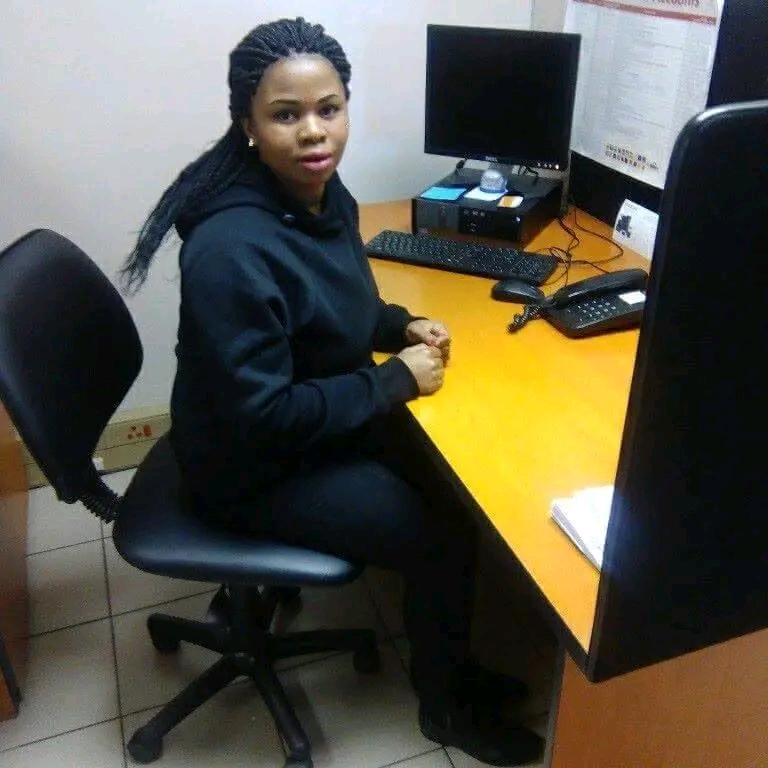

Juliet DitshegoWelcome to my Dk Solutions! I specialize in creating innovative web solutions and digital products designed to help businesses grow and thrive online. Here, you'll find a showcase of my work, including user-friendly websites and responsive digital solutions that prioritize clean design and seamless functionality. Explore my portfolio to learn more about my skills and how I can help bring your web ideas to life. My work focuses on blending creativity with functionality to create web solutions that meet the unique needs of each client. With a strong understanding of user experience and modern design principles, I build websites and digital products that are not only visually appealing but also intuitive and easy to navigate. From the initial concept to the final launch, I work closely with clients to ensure every project is executed with precision and attention to detail. I am dedicated to delivering high-quality web solutions that help businesses establish a strong online presence and connect with their audience effectively. |
 |
About Me
Hello, I'm Juliet Ditshego, a passionate web developer with a focus on creating responsive, user-friendly, and visually appealing websites. With over [insert years of experience] years of experience in the field, I have worked with clients from various industries, providing them with digital solutions that enhance their online presence.
I specialize in web development using [insert technologies you work with] and have a keen interest in front-end design. I strive to stay updated with the latest trends and tools in web development to ensure that every project I undertake is executed with the latest technologies and industry best practices. I'm committed to delivering quality results that meet both functional and aesthetic needs, creating websites that users love to visit and interact with.
When I'm not working on web development projects, you can find me exploring new technologies, attending industry events, and collaborating with fellow developers to create innovative digital solutions. I believe in the power of collaboration and the importance of continuous learning in this fast-evolving field.
Contact Us
I'm always open to new opportunities and collaborations. Feel free to reach out to me through any of the methods below:
You can email me at juliet@example.com.
Phone
You can reach me at +27726753621.
Address
I am based in Pretoria,Gauteng. If you'd like to meet in person, feel free to get in touch to arrange a time and place.
Social Media
Connect with me on my social platforms: